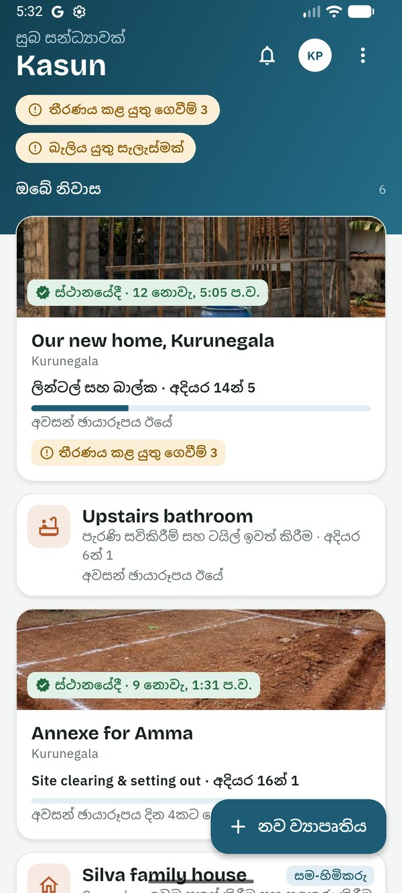
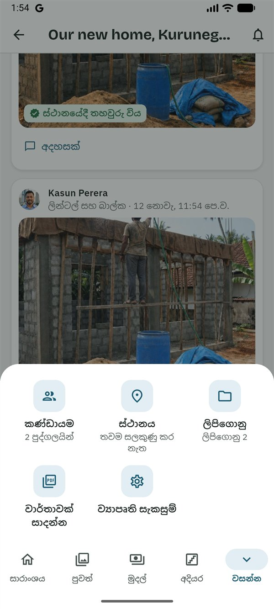
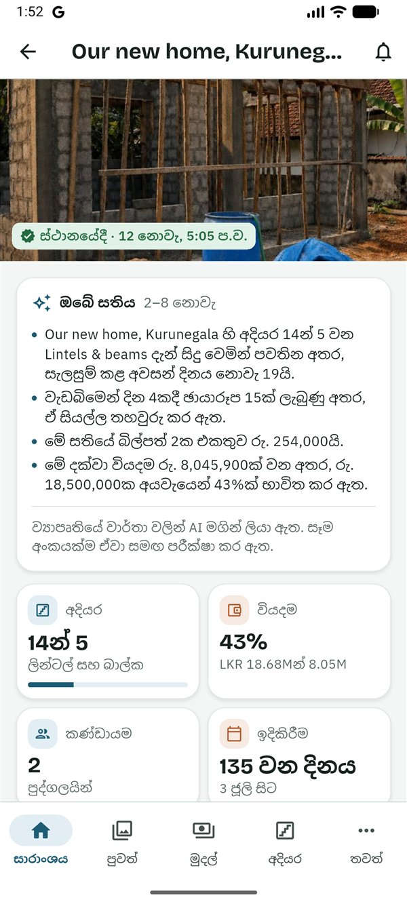
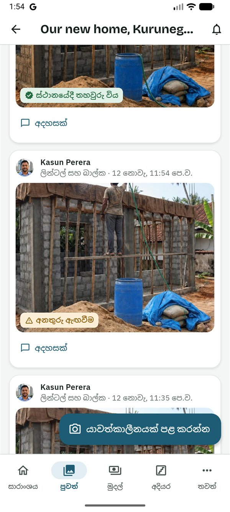
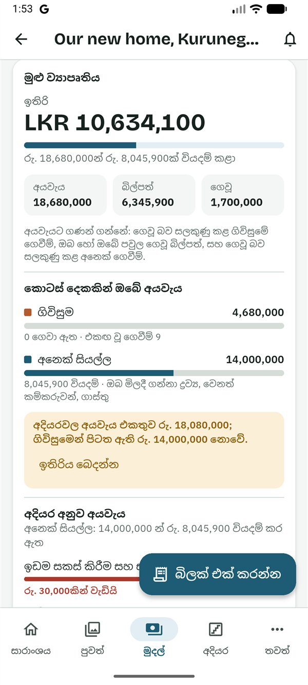
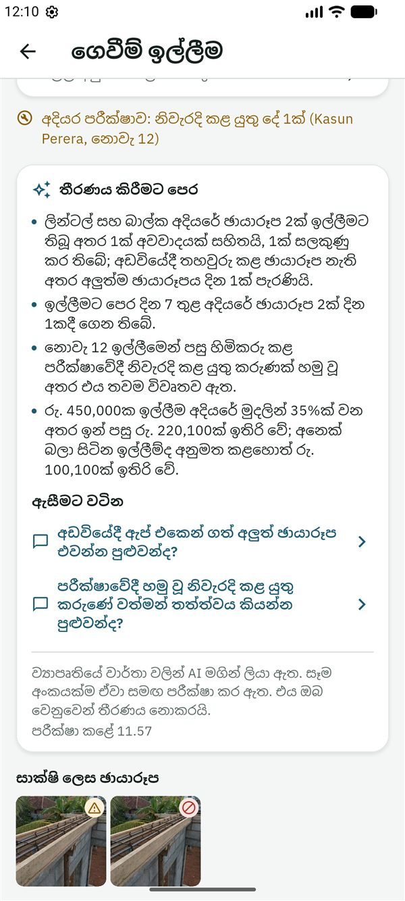

SiteProof
SiteProofමෙම සිංහල පාඨය කෙටුම්පතකි. යෙදුමේ සිංහල මෙන්ම, සිංහල මව් භාෂාව වන කෙනෙකු එය තවම සමාලෝචනය කර නැත.
This Sinhala text is a draft awaiting review by a native speaker, like the app's Sinhala.
මාර්ගෝපදේශ › හිමිකරු
හිමිකරුවන් සඳහා මාර්ගෝපදේශය
Read in English (ඉංග්රීසියෙන් කියවන්න)
මෙම මාර්ගෝපදේශය SiteProof ව්යාපෘතියක හිමිකරු සඳහායි: එනම් නිවස ඉදි කරන තැනැත්තා. ඔබට ව්යාපෘතියේ සියල්ල පෙනේ, සෑම ගෙවීමක් ගැනම තීරණය කරන්නේ ඔබයි, කණ්ඩායමට එක් වන්නේ කවුදැයි තෝරන්නේද ඔබයි. බොහෝ හිමිකරුවන් විදේශයක සිට තම දුරකථනයෙන් ඉදිකිරීම බලා සිටිති.
ඔබට කළ හැකි සහ කළ නොහැකි දේ
ඔබට කළ හැකි දේ
- සියල්ල බැලීම: යාවත්කාලීන සහ ඡායාරූප, අයවැය, සියලු බිල්පත් සහ ගෙවීම් ඉල්ලීම්, ගෙවීම් කාලසටහන, වැඩේ වෙනස්කම්, සැලසුම් සහ ලිපිගොනු.
- ගෙවීම් ඉල්ලීමක් අනුමත කිරීම, ඒ ගැන ප්රශ්නයක් ඇසීම හෝ ප්රතික්ෂේප කිරීම, සහ එය ගෙව්වා ලෙස සලකුණු කිරීම.
- සජීවී පරීක්ෂාවක් ඉල්ලීම: දැන්ම වැඩබිමෙන් නව ඡායාරූපයක්.
- ව්යාපෘතිය, එහි අදියර සහ අයවැය වෙනස් කිරීම, සහ අදියර ආරම්භ කිරීම හා අවසන් කිරීම.
- වැඩබිමේදී අදියරක් පරීක්ෂා කර එය අනුමත කිරීම.
- යාවත්කාලීන දැමීම, බිල්පත් එක් කිරීම, සැලසුම් සහ ලිපිගොනු එක් කිරීම, සහ ඕනෑම ලිපිගොනුවක් ඉවත් කිරීම.
- අයට ආරාධනා කිරීම සහ ඉවත් කිරීම, සහ ව්යාපෘතිය වෙනත් කෙනෙකුට භාර දීම.
- සැලැස්ම තෝරා එයට ගෙවීම.
මේවා කරන්නේ අනෙක් අයයි
- ගෙවීමක් ඉල්ලීම: ස්ථානයේ සිටින පවුලේ සාමාජිකයා හෝ කොන්ත්රාත්කරු ඉල්ලයි, ඔබ තීරණය කරයි.
- නව සැලසුමක් දුටු බව තහවුරු කිරීම: කොන්ත්රාත්කරු සහ ස්ථානයේ සිටින පවුලේ සාමාජිකයා එය කරයි, එවිට කිසිවෙක් පැරණි සැලසුමකින් ඉදි නොකරයි.
- මිල ගණනකින් අදියර යෝජනා කිරීම: කොන්ත්රාත්කරු හෝ නිර්මාණකරු එවයි, ඔබ අනුමත කරයි.
- ස්ථානය සලකුණු කිරීම: එය කරන්නේ වැඩබිමේ සිටින තැනැත්තායි, ඔබ ස්ථානයේ සිටින්නේ කවුද? සඳහා මම තෝරා ඇත්නම් මිස.
ආරම්භ කිරීම
ඇතුළු වීම
- Google Play වෙතින් SiteProof ස්ථාපනය කරන්න. SiteProof පරීක්ෂා කරන කාලය තුළ, එය ස්ථාපනය කළ හැක්කේ ආරාධනා ලැබූ පරීක්ෂකයින්ට පමණි. දැනට එය Android දුරකථන සඳහා පමණි.
- සිංහල හෝ English තෝරන්න. පසුව සැකසුම් තුළ එය වෙනස් කළ හැක.
- කෙටි හැඳින්වීම කියවන්න, නැතහොත් මඟ හරින්න ඔබන්න.
- ඔබේ ඊමේල් ලිපිනය ටයිප් කර කේතය යවන්න ඔබන්න. ඊමේල් එකේ ඇති ඉලක්කම් 6ක කේතය ටයිප් කර තහවුරු කරන්න ඔබන්න. නැතහොත් Google සමඟ ඉදිරියට යන්න ඔබන්න. මුරපදයක් නැත.
- ඔබ ගැන යටතේ ඔබේ නම සහ ඔබ ජීවත් වන රට පුරවා ඉදිරියට ඔබන්න. කැමති නම්, පළමුව ඉහළින් ඇති ඡායාරූපයක් එක් කරන්න ඔබන්න: ඡායාරූපයක් ගන්න හෝ ඔබේ ඡායාරූපවලින් තෝරන්න, ඔබේ මුහුණ රවුම තුළට එන ලෙස එය ගෙනයන්න, විශාල කරන්න, ඉන්පසු මෙම ඡායාරූපය යොදන්න ඔබන්න. එය දකින්නේ ඔබේ ව්යාපෘතිවල සිටින අය පමණි; පසුව සැකසුම්වලින් එය වෙනස් කිරීමට හෝ ඉවත් කිරීමට හැක.
ඔබේ ව්යාපෘතිය අරඹන්න
- මුල් තිරයේ (ඔබේ ව්යාපෘති) නව ව්යාපෘතිය ඔබන්න.
- මෙම ව්යාපෘතිය කා සඳහාද? යටතේ මගේම නිවස තෝරන්න.
- ව්යාපෘතියේ නම, දිස්ත්රික්කය සහ වැඩ වර්ගය පුරවන්න: නිවස, දිගු කිරීම, ප්රතිසංස්කරණය හෝ අලුත්වැඩියාව, මායිම් තාප්පය හෝ වෙනත්.
- ස්ථානයේ සිටින්නේ කවුද? තෝරන්න: පවුලේ සාමාජිකයෙක්, කොන්ත්රාත්කරු පමණයි හෝ මම. ස්ථානය සලකුණු කරන්නේ කවුදැයි මෙයින් තීරණය වේ. කොන්ත්රාත්කරු පමණයි නම්, සාක්ෂි වන්නේ කොන්ත්රාත්කරුගේ ඡායාරූප පමණක් නිසා, ගෙවීම්වලට පෙර යෙදුම සජීවී පරීක්ෂාවක් යෝජනා කරයි.
- නිවසක් නම්, මහල් ගණන සහ වහලය තෝරන්න; දන්නවා නම් බිම් ප්රමාණය (වර්ග අඩි) එක් කරන්න.
- නිවසක්, දිගු කිරීමක්, නාන කාමරයක් හෝ මුළුතැන්ගෙයක් නම්, නිමාවේ මට්ටම තෝරන්න: සරල, සාමාන්ය හෝ උසස්. නිම කරන ආකාරය අනුව වියදම බොහෝ සෙයින් වෙනස් වන නිසා, එම වැඩයට එක් එක් මට්ටම යනු කුමක්දැයි එහි පෙන්වයි. වහල අලුත්වැඩියා, මායිම් තාප්ප සහ වෙනත් වැඩ සඳහා මෙය අසනු නොලැබේ.
- කොන්ත්රාත් වර්ගය (ශ්රමය පමණයි, සම්පූර්ණ කොන්ත්රාත්තුව හෝ මිශ්ර) තෝරා, මුළු අයවැය (රු.), ආරම්භක දිනය සහ අවසන් කිරීමට බලාපොරොත්තු වන දිනය පුරවන්න.
- කැමති නම්, ඔවුන්ගේ නිවස වැනි නිවාසවලට යන වියදම අනෙක් පවුල්වලට දැනගැනීමට උදව් වීමට, මෙම ව්යාපෘතියේ වියදම් නිර්නාමිකව බෙදාගන්න සක්රිය කරන්න. වෙනත් නිවාස සමඟ මිශ්ර කළ වියදම් පමණක් භාවිත වේ: ඔබේ නම, ඡායාරූප, බිල්පත් හෝ වැඩබිමේ ස්ථානය කිසිවිටෙක නැත. ඔබ එය සක්රිය කරන තුරු එය අක්රියයි, පසුව ව්යාපෘතියේ සැකසුම්වලින් වෙනස් කළ හැක.
- ව්යාපෘතිය සාදන්න ඔබන්න. ඔබේ නිවසේ වර්ගයට ගැළපෙන ශ්රී ලාංකීය ආකෘතියකින් අදියර පිරවේ. අදියර ටැබයේ ඒවා වෙනස් කළ හැක.
- ස්ථානයේ සිටින පවුලේ සාමාජිකයාට හෝ කොන්ත්රාත්කරුට ආරාධනා කරන්න: ඔබේ කණ්ඩායම බලන්න.
ඔබේ ව්යාපෘතිය සොයාගන්න
ඔබේ ව්යාපෘති මුල් තිරයේ ඇත. ඔබ විවිධ භූමිකා වලින් ව්යාපෘති කිහිපයක සිටී නම්, ඒවා කාණ්ඩ කර ඇත: ඔබේ නිවාස (ඔබේ සහ ඔබ සම-හිමිකරු වන ඒවා), ඔබේ වැඩ (කොන්ත්රාත්කරු හෝ නිර්මාණකරු ලෙස) සහ ඔබ අනුගමනය කරන (ස්ථානයේ සිටින පවුලේ සාමාජිකයා හෝ බලන්නා ලෙස). ඔබ වෙනුවෙන් යමක් රැඳී ඇති ව්යාපෘති මුලින්ම පෙන්වයි. කාඩ්පතක අදියර, අවසන් ඡායාරූපය ලැබුණු වේලාව සහ රැඳී ඇති දේ පෙන්වයි, නමුත් කිසිවිටෙක මුදල් නොපෙන්වයි. ඔබේ ව්යාපෘතිය සාරාංශය ටැබයෙන් විවෘත වේ.

ව්යාපෘතියක් තුළ, පහළ තීරුවේ සාරාංශය, පුවත්, මුදල්, අදියර සහ තවත් ඇත. තවත් ඔබූ විට කණ්ඩායම, ස්ථානය, ලිපිගොනු, වාර්තාවක් සාදන්න සහ ව්යාපෘති සැකසුම් සහිත පුවරුවක් විවෘත වේ. එය වැසීමට වසන්න හෝ පුවරුවට ඉහළින් ඕනෑම තැනක් ඔබන්න.

ඉදිකිරීම බලා සිටීම
සාරාංශය
- ව්යාපෘතිය විවෘත කරන්න. ඉහළින්ම ඇත්තේ ස්ථානයේදී තහවුරු වූ නවතම ඡායාරූපයයි.
- ඔබේ සතිය (Plus): සෑම සඳුදාම ඔබේ වේලා කලාපයේ උදේ 7ට, පසුගිය සතිය ගැන පේළි කිහිපයක්: ප්රගතිය, ඡායාරූප සහ ඒවායේ පරීක්ෂා, මේ සතියේ සහ මේ දක්වා මුදල්, සහ ඔබ වෙනුවෙන් රැඳී ඇති දේ. එය ව්යාපෘතියේ වාර්තා වලින් AI මගින් ලියා ඇති අතර, සෑම අංකයක්ම ඒවා සමඟ පරීක්ෂා කර ඇත.
- කොටු වල අදියර, අයවැයෙන් වියදම, කණ්ඩායම සහ ඉදිකිරීම ආරම්භ කර කොපමණ කලක්දැයි පෙන්වයි.
- ඔබේ අවධානය අවශ්යයි යටතේ ඔබ වෙනුවෙන් රැඳී ඇති දේ ඇත: ගෙවීම් ඉල්ලීම්, වැඩේ වෙනස්කම්, තහවුරු කළ යුතු ස්ථානයක්, සලකා බැලිය යුතු අදියර සැලැස්මක්. එතැනට යාමට පේළියක් ඔබන්න.
- තවත් පහළින්: ඔබේ නිවස ඉදිවන හැටි බලන්න (එකම තැනක සිට ගළපා ගත් ඡායාරූප ඇති විට කාල-ගමනක්; කෙටි වීඩියෝවක් ලෙස යැවීමට බෙදාගන්න ඔබන්න), නවතම ඡායාරූප, වැඩබිමේ ක්රියාකාරකම් (පසුගිය සති 12 තුළ සෑම දිනකටම කොටුවක්; අදියරක් සිදුවෙමින් තිබියදී දින තුනක් හෝ වැඩි කාලයක් ඡායාරූප නොලැබුණොත් ඇම්බර් පැහැති සටහනක්) සහ අමතන්න සහ WhatsApp බොත්තම් සහිත ස්ථානයේ සිටින්නේ කවුද.

යාවත්කාලීන සහ ඡායාරූප
- පුවත් විවෘත කරන්න. නවතම යාවත්කාලීනය මුලින්ම ඇත. එක් අදියරක් පමණක් බැලීමට එහි නම ඔබන්න, නැතහොත් සියලු අදියර.
- සෑම ඡායාරූපයකටම ලාංඡනයක් ඇත: ස්ථානයේදී තහවුරු විය, අනතුරු ඇඟවීම හෝ සලකුණු කළා. හේතුව සරල වචනවලින් බැලීමට ලාංඡනය ඔබා, ඉන්පසු මෙහි තේරුම කුමක්ද? ඔබන්න. ඡායාරූප ලාංඡන බලන්න.
- ඔබ බැලූ බව වැඩබිමේ සිටින තැනැත්තා දැනගන්නට, යාවත්කාලීනයක දැක්කා 👍 ඔබන්න.
- සම්පූර්ණ තිරයෙන් බැලීමට ඡායාරූපයක් ඔබන්න. මෙම ඡායාරූපය ගැන අසන්න මගින් එම ස්ථානයේම සිට නව ඡායාරූපයක් ඉල්ලන අදහසක් ආරම්භ වේ.
- එම ස්ථානයේම සිට පෙර ගත් ඡායාරූපය අසල එය බැලීමට සසඳන්න ඔබන්න. එදා සහ දැන් අතර ඉර ඇදගෙන යන්න.
- සමහර යාවත්කාලීන වල හඬ සටහනක් ඇත: ඇසීමට එය ධාවනය කරන්න. Plus සමඟ, එය AI මගින් ලියා දක්වා සිංහලට හෝ ඉංග්රීසියට පරිවර්තනය කෙරේ.
- යාවත්කාලීනයකට පිළිතුරු දීමට හෝ ඒ ගැන ඇසීමට අදහසක් ඔබන්න.

සජීවී පරීක්ෂාවක් ඉල්ලන්න
දැන් පවතින තත්ත්වයෙන්ම වැඩේ බැලීමට අවශ්ය විට, උදාහරණයක් ලෙස විශාල ගෙවීමකට පෙර:
- පුවත් තුළ, සජීවී පරීක්ෂා යටතේ සජීවී පරීක්ෂාවක් ඉල්ලන්න ඔබන්න.
- ඡායාරූප ගත යුත්තේ කවුද? තෝරා, පෙන්විය යුත්තේ කුමක්ද ලියන්න, උදා: "උතුරු කෙළවරේ සිට ස්ලැබ් යකඩ, මිනුම් පටියක් සමඟ".
- කවදාට තෝරන්න: පැය 1ක් ඇතුළත, පැය 3ක් ඇතුළත හෝ ශ්රී ලංකා වේලාවෙන් ප.ව. 6:30ට පෙර. තිරයේ වැඩබිමේ වේලාව පෙන්වන අතර, එහි අඳුරු විය හැකි විට අනතුරු අඟවයි.
- විශාල ගෙවීමකට පෙර කඩදාසියක කේතයක් ද ඉල්ලන්න තෝරන්න. ඔවුන් SiteProof දෙන ඉලක්කම් 4ක කේතයක් කඩදාසියක ලියා ඡායාරූපයක පෙන්වයි, එවිට එය පැරණි ඡායාරූපයක් විය නොහැක. කේතය ඡායාරූපයේ ඇත්දැයි ඔබම බලන්න: යෙදුම එය කියවන්නේ නැත.
- දැන් ඉල්ලන්න ඔබන්න. ඔවුන්ට වහාම දැනුම්දීමක් ලැබේ.
පරීක්ෂාව සම්පූර්ණයි වන්නේ, ඔබ ඉල්ලූ පසු, සංඥා ඇතිව, යෙදුමෙන් ගත් සහ නියමිත වේලාවට පෙර SiteProof වෙත ළඟා වන ඡායාරූපයකින් පමණි. නැතහොත් එය නියමිත වේලාවට සම්පූර්ණ නොවුණා ලෙස පෙන්වයි. විවෘත පරීක්ෂාවක් ඔබට අවලංගු කළ හැක; එවිට එම තැනැත්තාට දැනුම් දෙයි.
මුදල්
- මුදල් විවෘත කරන්න. ඔබ වෙනුවෙන් රැඳී ඇති ගෙවීම් ඉල්ලීම් ඉහළින්ම ඇත. සියලු ගෙවීම් බලන්න මගින් සියලු ඉල්ලීම්, ලබන්නා අනුව එකතු සමඟ පෙන්වයි.
- අයවැය කාඩ්පතේ ඉතිරි මුදල එක් විශාල අංකයක් ලෙස පෙන්වයි (අයවැය ඉක්මවූ විට රතු පැහැයෙන්), ඉන්පසු මුළු ව්යාපෘතිය සඳහා අයවැය, බිල්පත් සහ ගෙවූ, සහ අදියර අනුව අයවැය.
- "වියදම" යනු ඔබ හෝ ඔබේ පවුල ගෙවූ බිල්පත් සහ ගෙව්වා ලෙස සලකුණු කළ ගෙවීම් ය. කොන්ත්රාත්කරුගේම බිල්පත් පෙන්වන නමුත් නැවත ගණන් නොගනී: ඒවා කොන්ත්රාත්කරුට ගෙවීම් ඉල්ලීම් හරහා ගෙවේ.
- ගෙවීම් කාලසටහනක් ඇති විට, කොටස් දෙකකින් ඔබේ අයවැය මගින් ගිවිසුම (ඔබ ඉදිකරන්නාට ගෙවිය යුතු දේ) සහ අනෙක් සියල්ල (ඔබ මිලදී ගන්නා ද්රව්ය, වෙනත් කම්කරුවන්, ගාස්තු) පෙන්වයි. අදියර අයවැය ආවරණය කරන්නේ අනෙක් සියල්ල පමණි. එකඟ වූ ගෙවීමක් එහි අදියරේ පේළියේ පෙන්වන නමුත් ගිවිසුමට අනුව පරීක්ෂා කරන නිසා, එය ගෙවීමෙන් කිසිදා අදියරක අයවැය ඉක්මවන්නේ නැත. අදියර අයවැයවල එකතුව අනෙක් සියල්ලට සමාන නැත්නම් ඉතිරිය බෙදන්න ඔබන්න.
- තවත් පහළින්: ගෙවීම් කාලසටහන, වැඩේ වෙනස්කම්, කාලයත් සමඟ වියදම (අයවැයක් සහිත අදියරක් අවසන් වූ පසු පුරෝකථනයක් සමඟ), මුදල් යන්නේ කොහාටද, බිල්පත්වල මිල ගණන් (උදා: සිමෙන්ති කොට්ටයකට හෝ වැලි කියුබ් එකකට) සහ බිල්පත්: ප්රශ්නයක් ඇති ඒවා සහ නවතම පහ. බිල්පත් …ම බලන්න සියලු බිල්පත් මාසය අනුව, එක් එක් මාසයේ එකතුව සමඟ පෙන්වයි; අදියරක් තට්ටු කර එහි බිල්පත් පමණක් බලන්න, නැතහොත් භාණ්ඩයක් හෝ කඩයක් සොයන්න.
- බිලක් ගැන ඇසීමට එය විවෘත කර ⋮ → මෙම බිල විමසන්න ඔබා ඔබේ ප්රශ්නය ටයිප් කරන්න. එය එක් කළ තැනැත්තාට දැනුම් දෙයි. ඔබ විමසීම ඉවත් කරන්න ඔබන තුරු බිල විමසා ඇත ලෙස සලකුණුව පවතී.

ගෙවීම් කාලසටහන සකසන්න (Plus)
ගෙවීම් කාලසටහන යනු ගිවිසුමේ එකඟ වූ ගෙවීම් ලැයිස්තුවයි, උදා: "10% අත්තිකාරම්", "අත්තිවාරමෙන් පසු 25%", "භාර දෙන විට ඉතිරිය". එය ඇති විට, සෑම ගෙවීම් ඉල්ලීමක්ම එය අදාළ එකඟ වූ ගෙවීමට අනුව පරීක්ෂා කෙරේ. එය සකසන්නේ ඔබ හෝ සම-හිමිකරුවෙකි.
- ගිවිසුම තවත් → ලිපිගොනු තුළ, ගිවිසුම හෝ මිල ගණන් වර්ගය සමඟ එක් කරන්න.
- මුදල් තුළ, ගෙවීම් කාලසටහන යටතේ ගිවිසුමෙන් කියවන්න (AI මගින් කොන්ත්රාත්කරුගේ නම, මුළු මුදල සහ ගෙවීම් කියවයි) හෝ අතින් ඇතුළත් කරන්න ඔබන්න.
- සෑම ගෙවීමක්ම ගිවිසුම සමඟ පරීක්ෂා කරන්න: එහි නම, %, මුදල (රු.) සහ ගෙවන්නේ (අදියරෙන් පසු). ප්රතිශත හෝ මුදල් එකතු නොවන විට යෙදුම අනතුරු අඟවයි.
- කාලසටහන සුරකින්න ඔබන්න. ඊට පෙර කිසිවක් සුරැකෙන්නේ නැත.
කොන්ත්රාත්කරුට සහ ස්ථානයේ සිටින පවුලේ සාමාජිකයාට කාලසටහන පෙනේ. ඔවුන් ගෙවීමක් ඉල්ලන විට, එය කුමන එකඟ වූ ගෙවීම සඳහා දැයි තෝරයි.
වැඩේ වෙනසක් ගැන තීරණය කරන්න (Plus)
එකඟ වූ වැඩෙන් යමක් වෙනස් වූ විට (පළල් ලින්ටලයක්, වඩා හොඳ ටයිල්, අත්තිවාරම යට පාෂාණ), වැඩබිමේ සිටින තැනැත්තා එය එහි වියදම හෝ ඉතිරිය, අමතර දින සහ ඡායාරූප සමඟ සටහන් කරයි.
- ඔබේ අවධානය අවශ්යයි තුළින්, හෝ මුදල් → වැඩේ වෙනස්කම් තුළින් වෙනස විවෘත කරන්න.
- අනුමත කරන්න, ප්රශ්නයක් අහන්න හෝ පිළිනොගන්න ඔබන්න.
- අනුමත කිරීමෙන් අදියරේ අයවැය සහ මුළු අයවැය එහි වියදමින් වැඩි වේ. ගෙවීම් කාලසටහනක් ඇත්නම්, ඒ වෙනුවට එය තවත් එකඟ වූ ගෙවීමක් වේ. මෙම අදියරේ අවසානය, ඊට පසු සියලු අදියර සහ ඉලක්ක අවසන් දිනය කල් දැමීමට සැලැස්ම දින …කින් කල් දමන්න තෝරා තබන්න.
ඔබ කෙලින්ම එකඟ වූ වෙනසක් නම්: ඔබම වෙනසක් සටහන් කරන්න ඔබන්න. එය වහාම අනුමත වේ.
ගෙවීම් ඉල්ලීමක් ගැන තීරණය කිරීම
ඔබ හෝ සම-හිමිකරුවෙකු එකඟ වන තුරු කිසිවක් ගෙවන්නේ නැත. SiteProof මුදල් යවන්නේ නැත: ඔබ ඔබේ බැංකුව හරහා ගෙවා, ඉන්පසු එය සටහන් කරයි.
- උදාහරණයක් ලෙස "සුනිල් අත්තිවාරම සඳහා රු. 450,000ක් ඉල්ලයි" වැනි දැනුම්දීමක් ලැබේ. එය ඔබන්න, නැතහොත් මුදල් හෝ ඔබේ අවධානය අවශ්යයි තුළින් ඉල්ලීම විවෘත කරන්න.
- මුදල් කොටුව කියවන්න: අදියර අයවැය, මෙම අදියරේ ඔබේ බිල්පත්, මෙම අදියරට දැනටමත් ගෙවූ, අනුමතයි, තවම ගෙවා නැත, මෙම ඉල්ලීම සහ මෙයින් පසු ඉතිරි. එම අදියරේ වෙනත් ඉල්ලීම් ද රැඳී ඇති විට, සියල්ල අනුමත කළහොත් ඉතිරි මගින් ඉතිරි වන මුදල පෙන්වයි (එය අයවැය ඉක්මවන විට රතු පැහැයෙන්).
- කාලසටහනේ එකඟ වූ ගෙවීමක් නම්, කොටුවේ ගිවිසුම, ගිවිසුමට ගෙවා ඇත සහ මෙයින් පසු ගිවිසුමේ ඉතිරිය පෙන්වන අතර, මෙම ඉල්ලීමෙන් පසු එකඟ වූ ගෙවීමෙන් කොටසක් ඉතිරි වේද, එය ඉතිරි කොටසද, නැතහොත් එය ඉක්මවයිද (රතු පැහැයෙන්) යන්න කියයි.
- තීරණය කිරීමට පෙර (Plus) කියවන්න: ඉල්ලීම සමඟ පැමිණි ඡායාරූප සහ ඒවායේ පරීක්ෂා, අදියරේ මෑත ඡායාරූප, එහි අයවැය, එහි පෙර ගෙවීම් සහ අදියර පරීක්ෂාව ගැන පේළි කිහිපයක්, ඇසීමට වටින යටතේ ප්රශ්න තුනක් දක්වා. ප්රශ්නයක් ඇසීමට එය ඔබන්න. එය ව්යාපෘතියේ වාර්තා වලින් AI මගින් ලියා ඇති අතර, සෑම අංකයක්ම ඒවා සමඟ පරීක්ෂා කර ඇත. එය ඔබ වෙනුවෙන් තීරණය නොකරයි.
- සාක්ෂි ලෙස ඡායාරූප සහ ඒවායේ ලාංඡන, සහ "අදියර පරීක්ෂාව: … අනුමත කළා" හෝ "නිවැරදි කළ යුතු දේ 1ක්" වැනි අදියර පරීක්ෂා පේළිය බලන්න.
- තීරණය කරන්න:
- අනුමත කරන්න: තහවුරු කර, ඔබේ බැංකුව හරහා ගෙවන්න. ගෙවිය යුතු ගෙවීමක් ඇති බව ස්ථානයේ සිටින පවුලේ සාමාජිකයාට දැනුම් දෙයි.
- ප්රශ්නයක් අහන්න: ඉල්ලීම සලකුණු කර රැඳී පවතින අතර, පිළිතුර අදහසක් ලෙස පැමිණේ.
- ප්රතික්ෂේප කරන්න: හේතුව දෙන්න. ඉල්ලූ තැනැත්තාට වහාම දැනුම් දෙයි.
- ගෙවූ පසු, ඉල්ලීම විවෘත කර ගෙව්වා ලෙස සලකුණු කරන්න ඔබා, බැංකු යොමු අංකය, ස්ලිප් එකේ ඡායාරූපය හෝ දෙකම එක් කරන්න. ස්ථානයේ සිටින පවුලේ සාමාජිකයා ගෙව්වා නම්, ඔවුන්ට එය සලකුණු කළ හැක.
වැඩබිමේ සිටින්නේ කොන්ත්රාත්කරු පමණයි නම්, සාක්ෂි වන්නේ කොන්ත්රාත්කරුගේ ඡායාරූප පමණක් බව ඉල්ලීම මතක් කරයි. විශාල ගෙවීමක් සඳහා පළමුව සජීවී පරීක්ෂාවක් ඉල්ලන්න.

අදියර සහ අදියර පරීක්ෂා
- අදියර තුළ අදියර කාල රේඛාවක් ලෙස පෙන්වයි. එකක් විවෘත කිරීමට එය ඔබන්න: එහි තත්ත්වය සහ දින, අයවැය සහ ඉතිරි, අදියර පරීක්ෂාව, ඡායාරූප, බිල්පත් සහ ගෙවීම් ඉල්ලීම්.
- මෙම අදියර ආරම්භ කරන්න හෝ මෙම අදියර අවසන් ලෙස සලකුණු කරන්න ඔබන්න. අදියරේ ගෙවීම් ඉල්ලීමක් රැඳී ඇති විට එය අනුමැතිය බලාපොරොත්තුවෙන් ලෙස පෙන්වයි.
- සැලැස්ම වෙනස් කිරීමට: අදියරක ⋮ (තත්ත්වය වෙනස් කරන්න හෝ සංස්කරණය කරන්න) ඔබන්න; අදියර ටැබයේ අදියරක් එක් කරන්න ඔබන්න, නැතහොත් අනුපිළිවෙළ වෙනස් කිරීමට අදියරක් අල්ලාගෙන ඇදගෙන යන්න. මගේ අයවැය බෙදන්න මගින් සෑම අදියර අයවැයකටම ඔබේ මුළු මුදලින් සාමාන්ය කොටසක් පුරවයි; එය දළ මඟපෙන්වීමක් මිස මිල ගණනක් නොවේ. ඡායාරූප, බිල්පත් හෝ ගෙවීම් ඇති අදියරක් මකා දැමිය නොහැක; ඒ වෙනුවට එය නැවත නම් කරන්න.
- අදියර දින සැලසුම් කරන්න මගින් ආරම්භක දිනයේ සිට ඉලක්ක අවසන් දිනය දක්වා අදියර බෙදයි. ඉන්පසු කාලසටහන ප්රස්ථාරය සැලැස්ම සහ සැබවින්ම සිදු වූ දේ, සහ ඉදිකිරීම පසුපසින්ද ඉදිරියෙන්ද යන්න පෙන්වයි.
- කොන්ත්රාත්කරුගේ හෝ නිර්මාණකරුගේ මිල ගණනින් යෝජනාවක් ඔබේ අවධානය අවශ්යයි තුළ පෙන්වයි ("…ගේ අදියර යෝජනාව සලකා බලන්න"). යෝජිත සෑම අදියරක්ම එහි දැනට ඇති නම සහ අයවැය අසල, සහ අලුත්, ඉවත් වන සහ රඳවා ගන්නා අදියර බැලීමට සලකා බලන්න ඔබන්න. ඉන්පසු අනුමත කරන්න, ප්රශ්නයක් අහන්න හෝ ප්රතික්ෂේප කරන්න.
අදියරක් පරීක්ෂා කරන්න
ප්රධාන අදියරවලට (අත්තිවාරම, DPC, ලින්ටල් සහ බාල්ක, ස්ලැබ්, වහලය, විදුලි සහ ජල නළ, බදාම ගෑමට පෙර) කෙටි පරීක්ෂා ලැයිස්තුවක් ඇත. ඔබේ නිර්මාණකරු වැඩබිමේදී ඒවා පරීක්ෂා කරයි; ඔබටද කළ හැක.
- අදියර විවෘත කරන්න. අදියර පරීක්ෂාව තුළ මෙම අදියර පරීක්ෂා කරන්න ඔබන්න (පරීක්ෂා ලැයිස්තුවක් නැති අදියරක නම් මෙම අදියර අනුමත කරන්න).
- සෑම කරුණක්ම හරි, නිවැරදි කළ යුතුයි (සහ නිවැරදි කළ යුත්තේ කුමක්දැයි කියන්න) හෝ පරීක්ෂා නොකළ ලෙස සලකුණු කරන්න. නිවැරදි කළ යුතු වෙනත් දේ එක් කරන්න.
- අදියර අනුමත කරන්න හෝ නිවැරදි කළ යුතු දේ …ක් යවන්න ඔබන්න. ඔබ පරීක්ෂා කළ දේවල ඡායාරූප එක් කළ හැක.
- කොන්ත්රාත්කරු සහ ස්ථානයේ සිටින පවුලේ සාමාජිකයා සෑම කරුණක්ම ඡායාරූප සමඟ නිවැරදි කළ බව සලකුණු කරයි. සියල්ල නිවැරදි කළ විට, නැවත පරීක්ෂා කරන්න ලෙස ඔබෙන් ඉල්ලයි.
ඉංජිනේරුවරයෙකු සමාලෝචනය කරන තුරු මෙම පරීක්ෂා ලැයිස්තු කෙටුම්පත් වේ. අදියර පරීක්ෂාවක් යනු වාර්තාවක් මිස කිසිදා බාධකයක් නොවේ: එය අදියරේ සහ එහි ගෙවීම් ඉල්ලීම්වල පෙන්වයි.

ඔබේ කණ්ඩායම සහ ස්ථානය
කෙනෙකුට ආරාධනා කරන්න
- තවත් → කණ්ඩායම විවෘත කර කෙනෙකුට ආරාධනා කරන්න ඔබන්න.
- භූමිකාව තෝරන්න: ස්ථානයේ සිටින පවුලේ සාමාජිකයා, කොන්ත්රාත්කරු, නිර්මාණකරු, බලන්නා හෝ සම-හිමිකරු. එම තැනැත්තාට කළ හැකි දේ එක් එක් භූමිකාව යටතේ කියයි.
- කැමති නම්, "සුනිල් බාස්" හෝ "අම්මා" වැනි පෙන්වන නම (අවශ්ය නම්) ටයිප් කරන්න.
- සාදා බෙදාගන්න ඔබා එය WhatsApp හරහා යවන්න. සිංහලෙන් සහ ඉංග්රීසියෙන් ඇති පණිවිඩයේ අක්ෂර 6ක කේතයක් ඇත. එය එක් වරක් පමණක්, දින 7ක් වලංගුයි.
- තවම භාවිත නොකළ කේත තවම භාවිත නොකළ ආරාධනා යටතේ ඇත: නැවත බෙදාගන්න හෝ ආරාධනාව අවලංගු කරන්න.
- පෙන්වන නම වෙනස් කරන්න, ව්යාපෘතියෙන් ඉවත් කරන්න (ඔවුන්ගේ ප්රවේශය වහාම නවතී; ඔවුන්ගේ පැරණි ඡායාරූප සහ පළ කිරීම් ඉතිරි වේ) හෝ හිමිකරු කරන්න සඳහා තැනැත්තෙකු ඔබන්න.
- ඔබ සක්රිය කරන තුරු නිර්මාණකරුට අයවැය පෙනේ අක්රියයි. කොන්ත්රාත්කරුවන්ට සහ බලන්නන්ට එය කිසිවිටෙක නොපෙනේ.
- හිමිකරු කරන්න මගින් ව්යාපෘතිය සම-හිමිකරුවෙකුට, ස්ථානයේ සිටින පවුලේ සාමාජිකයාට හෝ බලන්නෙකුට භාර දෙයි (කොන්ත්රාත්කරුට හෝ නිර්මාණකරුට නොවේ). ඔබ සම-හිමිකරුවෙකු වේ.
ස්ථානය තහවුරු කරන්න
ඡායාරූප පරීක්ෂා කරන්නේ ස්ථානයට අනුවයි. වැඩබිමේ සිටින තැනැත්තා ඉඩම මත සිට එය සලකුණු කරන අතර, එය පරීක්ෂා කරන ලෙස ඔබෙන් ඉල්ලයි.
- ඔබේ අවධානය අවශ්යයි තුළ ස්ථානය පරීක්ෂා කර තහවුරු කරන්න ඔබන්න, නැතහොත් තවත් → ස්ථානය විවෘත කරන්න.
- සලකුණ බැලීමට Google Maps හි බලන්න ඔබන්න.
- ස්ථානයේ ගත් ඡායාරූප ලෙස සැලකෙන දුර සකසන්න (මුලින් මීටර් 150).
- ස්ථානය තහවුරු කරන්න ඔබන්න.
එය තහවුරු කරන තුරු, ඡායාරූපවල "ස්ථානය තවම තහවුරු කර නැත" යන අනතුරු ඇඟවීම පෙන්වයි. ඔබ ස්ථානයේ සිටින්නේ කවුද? සඳහා මම තෝරා ඇත්නම්, එය ඔබම සලකුණු කරයි: ඉඩමේ මැද සිට, තවත් → ස්ථානය විවෘත කර මම දැන් නිවස ඉදිකරන ස්ථානයේ ඔබන්න.
සැකසුම් සහ වාර්තා
- සැකසුම්: මුල් තිරයේ ඉහළින් ඇති ඔබේ ඡායාරූපය හෝ මුල් අකුරු ඔබන්න (නැතහොත් ⋮ → සැකසුම්). එහි ඔබේ ඡායාරූපය, නම සහ රට (වෙනස් කිරීමට සංස්කරණය ඔබන්න), භාෂාව, දැනුම්දීම් සැකසුම්, ආරක්ෂාව (ඇඟිලි සලකුණ හෝ PIN මගින් අගුළු දමන්න), ඔබේ සැලැස්ම, උදව්, මගේ දත්ත බාගන්න, ඉවත් වන්න සහ මගේ ගිණුම මකන්න ඇත.
- තාවකාලිකව නතර කිරීම, අවසන් කිරීම හෝ නතර කිරීම: ව්යාපෘතිය විවෘත කර තවත් → ව්යාපෘති සැකසුම් ඔබන්න; ව්යාපෘතියේ තත්ත්වය ඉහළින්ම ඇත. වැඩ ටික කලකට නතර වන විට තාවකාලිකව නතර කරන්න (කැමති නම් නැවත ආරම්භ වන කාලය සහ හේතුව එක් කරන්න): කණ්ඩායමට දැනුම් දෙන අතර ඡායාරූප නොලැබීම ගැන යෙදුම අනතුරු අඟවන්නේ නැත. නිවස නිම වූ විට අවසන් බව සලකුණු කරන්න (සියලු අදියර අවසන් වූ පසු සාරාංශයද එය යෝජනා කරයි); ප්රමාද බිල්පත් සහ අවසාන ගෙවීම තවමත් එක් කළ හැකි අතර අවසාන වාර්තාව සෑදිය හැක. ඉදිකිරීම ඉදිරියට නොයන්නේ නම් ව්යාපෘතිය නතර කරන්න. කිසිවක් මැකෙන්නේ නැත, ඔබට හෝ සම-හිමිකරුවෙකුට මේ සෑම එකක්ම ආපසු හැරවිය හැක. තාවකාලිකව නතර කර, අවසන් කර හෝ නතර කර ඇති විට අදියර ආරම්භ කළ නොහැකි අතර සජීවී පරීක්ෂා ඉල්ලිය නොහැක; අවසන් කළ හෝ නතර කළ පසු අදියර සැලසුම් සහ වැඩේ වෙනස්කම් යැවීමට හෝ අනුමත කිරීමට නොහැක (තවමත් ප්රතික්ෂේප කළ හැක). තාවකාලිකව නතර කර ඇති විට හෝ නතර කළ පසු එන ගෙවීම් ඉල්ලීමක එය සඳහන් වේ.
- දැනුම්දීම්: නව ඡායාරූප සහ බිල්පත් සිදුවන විටම ලැබේ, නැතහොත් දිනකට වරක්, වේලාව තෝරා ඔබ කැමති වේලාවකට දිනකට වරක් ලැබේ. ගෙවීම් ඉල්ලීම්, තීරණ සහ පිළිතුරු සැමවිටම වහාම ලැබේ. ඔබට මඟ හැරුණු ඒවා ද ඇතුළුව, සියලු දැනුම්දීම් සීනුව තුළ ඇත. සිහිකැඳවීම්: ගෙවීම් ඉල්ලීමක් දින 3ක් ඔබේ තීරණය බලා සිටින විට, ඔබේ වේලාවෙන් ප.ව. 7ට සිහිකැඳවීමක් ලැබේ (උපරිම දෙවරක්). මට සිහිකැඳවීම් එවන්න මගින් ඒවා නවත්වන්න.
- වාර්තා (Plus): ව්යාපෘතිය විවෘත කර තවත් → වාර්තාවක් සාදන්න ඔබා, මේ මාසය, පසුගිය මාසය හෝ එක් අදියරක්, බැංකු ණයක් සඳහා තෝරන්න. WhatsApp හෝ ඊමේල් හරහා යැවීමට, Drive හි සුරැකීමට හෝ මුද්රණය කිරීමට බෙදාගැනීමේ තිරය විවෘත වේ.
දැනගත යුතු දේ
කවුද මොනවා දකින්නේ
- ඔබේ ව්යාපෘතියේ කිසිවක් පෙනෙන්නේ එහි සිටින අයට පමණි.
- අයවැය, සියලු බිල්පත් සහ සියලු ගෙවීම් ඉල්ලීම්: ඔබට, සම-හිමිකරුවන්ට සහ ස්ථානයේ සිටින පවුලේ සාමාජිකයාට. නිර්මාණකරුට ඔබ ඉඩ දුන්නොත් පමණි. කොන්ත්රාත්කරුට පෙනෙන්නේ ඔහුගේම බිල්පත් සහ ඉල්ලීම් පමණි, කිසිවිටෙක ඔබේ අයවැය නොවේ. බලන්නන්ට කිසිවිටෙක මුදල් නොපෙනේ.
- ඔබේ සතිය සහ තීරණය කිරීමට පෙර හිමිකරුවන්ට සහ සම-හිමිකරුවන්ට පමණි; ගෙවීම ඉල්ලූ තැනැත්තාට කිසිවිටෙක නොපෙනේ.
- ඡායාරූප, ස්ථානය, අදියර, අදියර පරීක්ෂා, අදහස් සහ ලිපිගොනු කණ්ඩායමේ සැමට පෙනේ. බලන්නන්ට ගිවිසුම නොපෙනේ.
- වැඩේ වෙනස්කම්, ඒවායේ වියදම සමඟ, බලන්නන් හැර සැමට පෙනේ.
- එකිනෙකාගේ නම සහ භූමිකාව, සහ දුරකථන අංකයෙන් ඇතුළු වූ අයගේ අංකය, කණ්ඩායමේ අයට පෙනේ.
- මුල් තිරයේ කාඩ්පත් කිසිවිටෙක මුදල් නොපෙන්වයි.
ඡායාරූප ලාංඡන
ඡායාරූප ගත හැක්කේ SiteProof කැමරාවෙන් පමණි, ගැලරියෙන් තෝරා ගත නොහැක. වේලාව ලැබෙන්නේ SiteProof සේවාදායකයෙන් මිස දුරකථනයෙන් නොවේ.
- ස්ථානයේදී තහවුරු විය: ස්ථානයේ කවය තුළ (සාමාන්යයෙන් මීටර් 150) ගෙන, ඉක්මනින් උඩුගත කළා.
- අනතුරු ඇඟවීම: යමක් සම්පූර්ණයෙන් පරීක්ෂා කළ නොහැකි විය. උදාහරණයක් ලෙස: ස්ථානය තවම තහවුරු කර නැත, GPS දුර්වල විය, ඡායාරූපය කවයෙන් ටිකක් පිටතින් ගත්තා, දිනකට වඩා පසුව උඩුගත වුණා, මෙම නිවසේ පෙර ඡායාරූපයකට සමානව පෙනේ, හෝ (Plus) තිරයක හෝ මුද්රිත පිටපතක ඡායාරූපයක් විය හැකියි. බොහෝ විට අවංක හේතුවක් ඇත. අසන්න, නැතහොත් සජීවී පරීක්ෂාවක් ඉල්ලන්න.
- සලකුණු කළා: ස්ථානයේ සිට කිලෝමීටර 1කට වඩා ඈතින්, ව්යාජ ස්ථානයක් සමඟ ගත්තා, එම ඡායාරූපයම පෙර පළ කර ඇත, හෝ වෙනත් ව්යාපෘතියක ඡායාරූපයකට සමානව පෙනේ.
- "අන්තර්ජාලය නැතිව ගෙන, … පසු උඩුගත විය": සංඥා නැතිව ගත්තා. වේලාව සහ ස්ථානය ඡායාරූපය ගත් මොහොතේ ඒවායි.
ලාංඡන ව්යාජ කිරීම අපහසු කර එය පහසුවෙන් හඳුනා ගැනීමට උදව් වේ, නමුත් වැඩේ ගුණාත්මකභාවය ඔප්පු කළ නොහැක. වැදගත් අදියර සඳහා නව ඡායාරූපයක් ඉල්ලන්න හෝ ගොස් බලන්න.
SiteProof Plus සහ නොමිලේ සැලැස්ම
- ගෙවන්නේ හිමිකරු පමණි. පවුලේ අය, කොන්ත්රාත්කරුවන් සහ අනෙක් සියලු දෙනා SiteProof නොමිලේ භාවිත කරයි.
- දැනට, SiteProof පරීක්ෂා කරන කාලය තුළ, සෑම ව්යාපෘතියකටම Plus නොමිලේ: සැකසුම් → සැලැස්ම තුළ "දැනට Plus නොමිලේ" ලෙස පෙන්වයි.
- පසුව, සෑම නව ව්යාපෘතියකටම පළමු දින 30 සඳහා Plus නොමිලේ ලැබෙන අතර, ඉන්පසු ඔබ සැලැස්මක් තෝරයි. නොමිලේ සැලැස්මට විවෘත ව්යාපෘති 1ක්, එහි පුද්ගලයින් 3ක් දක්වා සහ මසකට ඡායාරූප 30ක් ඇත. බිල්පත්, ගෙවීම් ඉල්ලීම්, සජීවී පරීක්ෂා, ලිපිගොනු සහ සැලසුම්, සහ මෙම මාර්ගෝපදේශයේ (Plus) ලෙස සලකුණු කළ සියල්ලට Plus අවශ්යයි. කිසිවක් කිසිදා මකා නොදමයි.
- ඡායාරූපයෙන් පුරවන්න (AI මගින් බිල් ඡායාරූපයක් කියවයි) නොමිලේ සැලැස්මේ මසකට 10 වරක්, Plus හි 100 වරක් ක්රියා කරයි.
උදව් සහ ඔබේ ගිණුම
සැකසුම් → උදව්: ප්රශ්න සහ පිළිතුරු, WhatsApp හරහා අප සමඟ කතා කිරීම, හෝ ගැටලුවක් වාර්තා කිරීම. SiteProof ඔබේ පවුලට උදව් වන්නේ නම්, එහි ඇති SiteProof ඇගයීමට ලක් කරන්න ඔබව Google Play වෙත ගෙන යයි: ඔබ දෙන ඇගයීම අපට බොහෝ වටිනවා. ඔබේ ගිණුම මැකීමට පෙර, වෙනත් අය සිටින ඕනෑම ව්යාපෘතියක් භාර දෙන්න: ගිණුම මකන්න (ඉංග්රීසියෙන්) බලන්න.